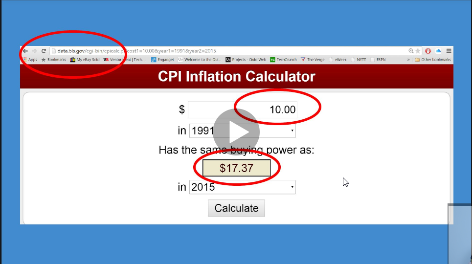
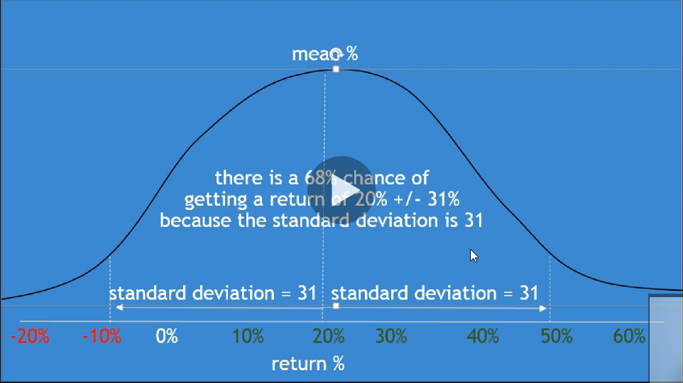

-->Be passionate about your work, set high standards for yourself, find your passion and you will never have a job
-->Accounting is more focused on accrued revenues & expenses
-->Accounting is bit more of a science and finances a bit more of an art
-->Finance is more focused on cash revenues & expenses, it's more focused on the cost of capital, the cost of getting money, it's more focused on the cost of equity(qualitative too)

i-->mean interest on loan

-->There's better corporate governance usually meaning they break fewer laws when companies is mature

nominal interest rate = interest rate of a bank loan
Cost of debt = liquidity risk + inflation risk + default risk + maturity(time) risk + the real interest rate
What is the lowest risk interest rate?
Ans: Literally no default risk
Risk free rate = real state of interest + inflation premium
What the heck is a yield curve and why does it matter?


-->The government usually when the economy's doing very well, the government likes to raise interest rates, and the way they do that is they actually sell bonds and a lot of banks sell there bonds
-->Selling and buying bonds is very powerful weapon for governments to have that ability to manipulate interest rates, it's actually the most imporant weapon that all governments have so that's why there's a lot of controversy around bitcoin because government can't control, they can't print bonds to build roads or declare war or whatever
-->inflation will be higher in the future, no wonder venture capital and real state and the stock market are in a bubble
-->when interest rates go up you won't see people investing in real estate because mortgage rates will go up, so when rates go up people prefer to put their money into banks, the rates higher, you can earn 5 or 10% interest rate
-->banks lending at the "prime" rate for their best customers and "prime plus X" for higher risk customers
-->in the real world all this default risk math is a waste of time because we all just reply on ratings agencies like s&p and Moody's, these companies gives ratings and the better the rating the lower interest you'll pay on the debt, AAA is the best rating
-->when interest rates are low many companies are born, if inflation is high(as in the early 80s), startups aren't born
--------------------------------------------------------------
Financial Capital&Ethics
-->if debt is seured via access to assets upon default, then this is called senior debt if not, then it is called subordinated debt

Standard devication means how spread out returns are.
How much risk i am taking on per unit of return = standard deviation / expected return
We expect public equity returns to = the risk free rate(includes inflation) + the volatility of the company versus the market * how much we expect stocks to outperform government bonds
-----------------------------------------------------------
Securities Law&Venture Financing
-->it's not hard to break the law by accident, if you do, your sentence could be the same as the sentence of a murderer no joke, as insane as that sounds, Ignorance of the [securities] law is no excuse
Securities Laws:
1-Prospective investors must receive all relevant information before investing
2-if you have been defrauded, you should receive compensation [class action lawsuits]
3-Insider information for publicly traded stocks is illegal and results in prison [no excuses]
-----------------------------------------------------------